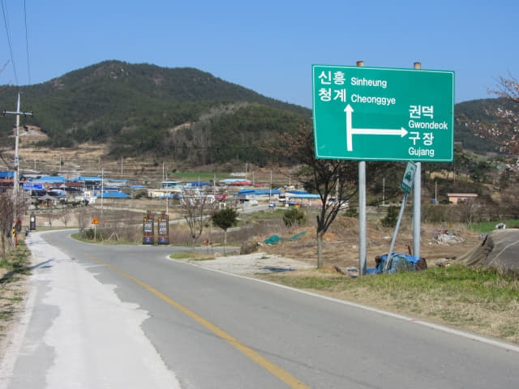
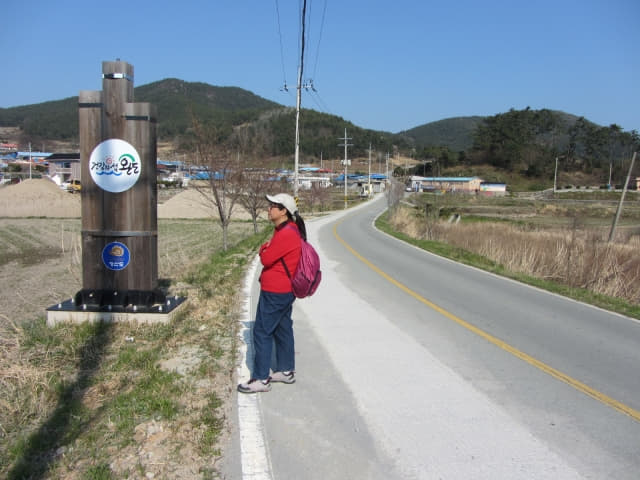
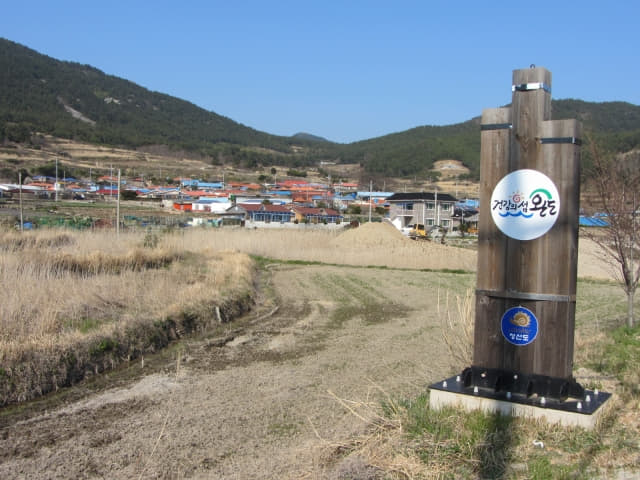
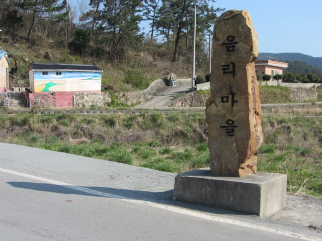
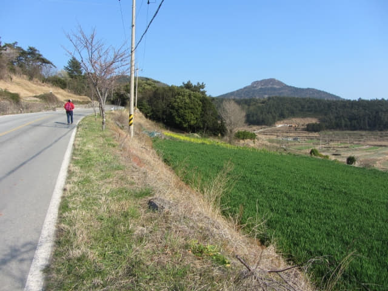

約下午三時半便返回樂里油菜花田山坡上的展望台, 看見時間那麼早, 便決定慢慢步行往「느린섬 여행학교 慢島旅行學校」, 沿馬路走一會, 經過3號步行路線的其中一段, 便循標示往堂里村莊內參觀, 沿村落間的小路走了十多分鐘, 來到一個涼亭, 就是在堂里村分叉路口看到的涼亭。如果當時在堂里村分叉路口決定往「느린섬 여행학교 慢島旅行學校」, 便會循田野中彎彎曲曲的小路來到這裡, 省回很多時間, 最終便可能抵達目的地。不過, 也無所謂啦! 今天最主要目的都是享受慢遊的樂趣。

不再往前走了, 在涼亭這裡掉頭循原路走。
很快便穿過村莊, 返回馬路, 這時才看見路口豎立的電影《西便制 서편제》拍攝場地標示。接著繼續沿馬路走往「느린섬 여행학교 慢島旅行學校」。

來到一個 T 字分叉, 右邊的路是往勸德里(권덕리)和舊場里(구장리)方向的。

繼續往前走。按地圖所示, 右邊是青龍公園 (청용공원), 但只有一幅荒野地, 何來公園? 反而左轉田野中得意的房子吸引了我們的注意。
馬路左邊山麓下的村莊是邑里 (읍리)。


再往前走便進入了邑里 (읍리)。

青山島上是有巴士行駛的, 不過, 既然是慢遊, 當然是慢慢步行啦!

邑里愛鄉塔。
欣賞沿途漂流和可愛的房子已經是一個節目, 一種樂趣, 其實什麼目的地也不重要了。
這裡好像是青龍公園的一部份。
邑里支石墓 (읍리지석묘)
走走看看, 不經不覺來到邑里支石墓。
支石墓是史前時期石墓的一種, 是巨石文物之一, 金字塔、方尖塔等埃及和非洲的各種石造建築, 以及英國的巨石陣, 法國卡爾納克的列石等都是巨石文化的產物。支石墓分佈於世界各地, 因地區和時期不同其形態也有所區別。
在支石墓分佈地區中, 東北亞最為集中, 而其中心地區就是韓國。韓國已發現的支石墓接近三萬座, 其中被指定為世界遺產的高敞、和順、江華支石墓遺址, 分佈密集, 形式多樣, 是研究支石墓的形成和發展過程的重要遺址。
支石墓是朝鮮半島史前時代的墓葬形式, 由厚重的扁平石塊作支架和上托面, 下面安葬死者遺骸和石器、陶器等隨葬品。
這裡也是青山島3號步行路線其中一段。
邑里支石墓群前的尖形大石是邑里下馬碑 (읍리하마비), 大小人員過此皆要下馬。
離開邑里支石墓, 繼續向前走。接著是一段頗為陡斜的上山路, 有點吃力的, 四周漸漸荒涼, 感覺開始進入山區。

馬路兩旁的櫻花。
已經進入了新豐里。
繼續往上走, 感覺已經到達馬路的最高處, 接著是一段平緩的馬路, 沒有那麼吃力。
一直向前走, 迎面是一個拐左的急彎, 估計是新豐里和清溪里交界的急彎, 也是抵達「느린섬 여행학교 慢島旅行學校」前的重要標示, 連忙看看地圖, 估計還要走起碼四十分鐘, 看看手錶, 已經是下午四時三十五分, 如果堅持前往, 肯定要摸黑回程。想一想, 太危險了, 也違反了今天悠閒慢遊的原意, 最後決定到此為止, 打道回府, 而今天的青山島行程也宣佈全部結束。